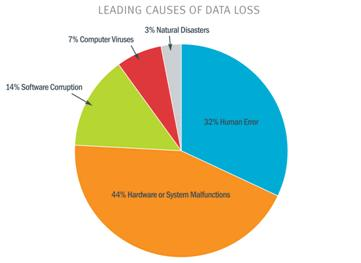
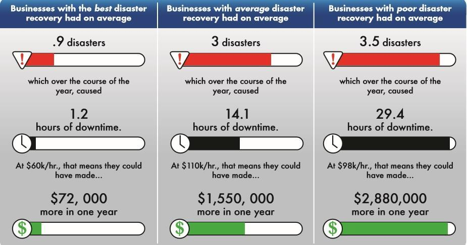
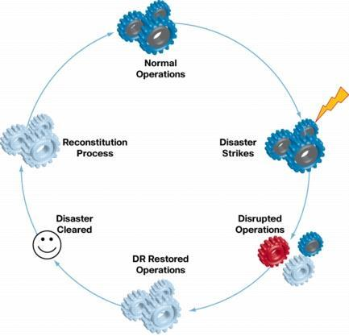
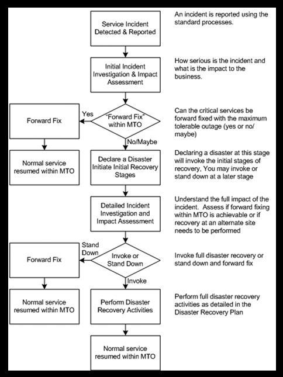
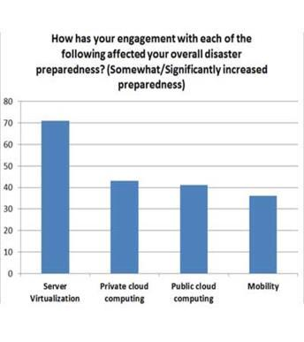

Disaster Recovery The Big Need in Today Digital World
This blog has been written as a White Paper which has been reproduced in form of a blog.
Top Reasons Why IT Disaster Recovery Plan Should Be a Top Priority
- Hardware or Machines Breakdown:
As hardware is highly designed in such a way that it is highly resistant to collapse though it can become faulty anytime. We cannot determine accurately when the Hardware will collapse. It can be via any fault in disk, internet connection failure, incorrect working of a part etc. Even being a single point of source it will affect the organization tremendously. To ensure that such a breakdown doesn’t hinder the organization capabilities , services or causes data loss We need to eradicate any point of failure by managing RAID , snapshots, mirroring which will cost significantly higher. So instead of eliminating a single point of failure the best option is to create a regular backup of your data which will prevent any type of data loss. For cost cutting you can take the service in form of Infrastructure as a Service (IAAS) which will enable you to outsource your whole IT environment instead of building an in house data center which will cost very high. It will exclude the capital expenses incurred while developing, maintaining & testing of IT Infrastructure in house.
- Error due to humans:
As no one is perfect so are humans. They can make mistakes which are very difficult to prevent and correct. Most of you would have been a victim of data loss in such a way that you weren’t able to save a document due to power failure or due to a crash in your system. These things are inevitable and can occur anytime. As these are simple mistakes but they have a long lasting effect which is impossible to prevent or correct it. To ensure such things do not affect your organization we should take significant steps to prevent as we all know prevention is better than cure. We can create incremental backups of data which will make it very easy in restoring the files. We must ensure security is very high otherwise security can be compromised in terms of firewalls, any type of virus, open ports. The best way to keep a check on human error is during quality testing activity for product. Double checking policies are most used in ensuring that the quality is high which acts as a strategy.
- Lost Data or Losing Critical Information:
Misplacing data or losing out on critical information affects the worst especially if the data is of a client to which service is provided or to a prospective customer. If having a well-executed mechanism in work, it will help the organization to avert the loss of data.

- Clients/ Customer wants perfection:
Due to the popularity of internet and its related revolutions in web, companies are now forced to become more translucent and answerable leading to an increase in high competition. As the competition is growing so are the prices lower making the volume the biggest factor in deciding the growth rate of an organization. Multiple players present in market, customer service plays an important role. The better the service the better the chance the customer will remain with you. Every customer expects the perfection because they have realized the next best competitor will be ready to give you the better service in order to grab some business of their competitors. If a disaster occurs then you are not only losing your customer but you are even losing future prospective clients which may also lead to a significant amount of loss incurred by the company. Moreover in a service industry customers are the kings.
- Holding of existing customer is costly, but re-acquiring a customer is very expensive:
On an average statistics basis it is very cheap to hold your client than to bring in new customers. Word from mouth to mouth is one of the biggest factors which drive the customers to an organization. If a disaster occurs it will be almost impossible to reacquire the old customer as the disaster would have affected him and wouldn’t be able to trust you leading to loss of business. Less the chance of recovering from disaster higher the chance of losing your customers. Earning a trust of a client takes a lot of time but losing it doesn’t even take much time. If in disaster his data is misplaced/lost or there is any disruption in the service it will affect his organization also. It will also lead to loss of money which is inversely in proportion with recovering back from disaster. IT disasters are undesirable to the clients. Though it is very common in industries so having a disaster recovery in place is very important and it will be a big need in today’s digital world.
- Weakest link determines the organization:
As we all know there is an old saying that You can have one of the most well-crafted ships ever made, but if your crew can’t see the iceberg just beyond your line of sight, then it doesn’t matter how well-built your ship is upon impact. It is very important to understand the above statement and it is an important factor which describes how strong an organization is. Since no business is resistant from disasters but we should have in place proper mechanisms which will help in prevention of such disasters and even quickly recovering from the loss. In today’s digitalized world there is a big need of having a disaster recovery plan in order. Making an excuse of not having one makes your organization vulnerable. We must create a disaster recovery plan such that the most critical and important servers are in top tier of data center having no single point of failure (SPOF) in terms of power failure or any failure in network connections. There should be multiple locations where your backup is being taken and ideally it should be minimum 75 kms away so that if a disaster occurs your other locations are safe and not affected. It will help in ensuring that you are almost protected in case of disaster occurs from any type of loss or downtime. It will give benefit to customers as their data will almost be safe at all-time leading to putting your business in shape and able to withstand tough IT disasters.
Conclusion:
Save Time, Save Money, Save your customers, Save your business, Implement a rigid IT Disaster Recovery Environment. No business is bulletproof to any disaster but having an IT disaster recovery plan will help in speeding up the recovery process which is expected by clients in today’s digital world. As per the statistics organization suffering a significant data loss are shut down within couple of years. Many business were shattered as they were not ready to embrace and implement an IT Disaster Recovery plan. We have simple solutions such as backing up increments of data, adopting IAAS from service providers, protecting your critical server, maintaining multiple backups at multiple locations. The need is very high for having a disaster recovery plan. Be prepared for developing, implementing, maintaining and testing disaster recovery plans in order to be saved by such disasters.The top priority of an organization in today’s world needs to be development of IT Disaster Recovery Plan.
Disaster Recovery Plans makes you More Efficient
Making an effective disaster plan which will help in aligning the business and consolidating it in order to recover from any type of disaster. By implementing a plan we should use the current technologies available in order to save cost, save time and also help in easy maintenance of the data or applications even for backup. According to IDC, using latest and advanced technologies we can enable more IT staff to protect the data or applications with recover capabilities. It also stated using automation processes we can reduce the time of staff with recovery procedures by upto 85 – 90%. By outsourcing the IT to a service provider it will help in more cost cutting.
The main ability in deciding how strong a disaster recovery plan lies in the fact:
- Deciding which applications or data are critical?
- Which applications or data are not critical?
- What will act as a single point of failure?
- Deciding remote business-critical data or applications?
- Deciding which service or data applications should be online first?
- Deciding time taken as downtime when a disaster occurs?
- How much will the downtime cost you?
Email messaging, desktop applications and web sites are mostly non critical aspects of IT infrastructure. As we implement a strong disaster recovery solution we will face less problem with applications and would be able to recover quickly leading to less downtime.
Disaster Recovery Plans help you Save Money
Implementation of a disaster recovery plan which is rigid and strong helps in making your IT cost justified. According to IDC, having a disaster recovery plan including new technologies can help in cost cutting rather than using new technologies which do not support disaster recovery capabilities. Research shows cost of implementation can be reduced by around 35% when compared with data centers which are unprepared and use older technologies.
In current world of digitalization cost cutting is the most important factor for an organization and a solid Disaster Recovery & Backup plan efficiently helps you to achieve it.
Disaster Recovery Plans help you Make Money
Whenever you think of making money via selling of a product or providing services, one main thing which is most crucial in providing it is that your business is operational and in use. Having a strong Disaster Recovery & Backup plan will actually help your organization to keep it running as efficiently as possible reducing the downtime which was faced earlier. It will not only help you recover quickly from a disaster recovery but also help in cutting down on disaster occurred time. If having a business without a disaster recovery plan the time till your company hasn’t recovered will keep losing money which even leads to bankruptcy as discussed in statistics.

The above figure clearly depicts the amount of money which could have been made more if you had best disaster recovery, average disaster recovery or poor disaster recovery mechanism in place.
Conclusion:
Having the best and efficient disaster recovery plan will help you in saving money for your business and would help in retaining your customers driving growth for the organization.
How to implement Disaster Recovery as a Service:


STATISTICS
90 % of businesses losing data from a disaster are forced to shut down within two years.
The survival rate for companies without a disaster recovery is less than 10 %.
Only 44 % of businesses successfully recovered information after recent data recovery event.
53 % of claimants never recoup the losses incurred by a disaster.
These statistics are misleading as we cannot determine what big an effect it possess. 90% of losing data does not tell what type of loss has occurred? Is it data loss? Is the file deleted during disaster? Is the data misplaced?
Vendors offering DR solutions/ services stated 70% of disruptions are caused by internal malfunctioning / corruption of H/W, S/W & Human Errors.
93% of organizations losing their data center for 10 days due to disaster filed for bankruptcy within a year.
50% of organizations without data management filed for bankruptcy instantly.
Companies hit by a disaster who are not able to resume services within 10 days do not survive.
31% of PC users have lost their data due to events beyond their control.
Only 35% of organizations have disaster recovery plan in place.
Survival rate for companies without a DR plan is < 10%.
86% of companies experienced downtime in the previous 12 months.
34% of companies do not test their tape backups.
77% of companies failed to recover data from tape even after testing their tape backups.
Every week on an average 140,000 hard drives crash in United States itself.
33% of companies do not back up their virtual servers as often their physical servers.
Improving Disaster Recovery Statistics

71% companies adopting server virtualization were better prepared from recovering from a disaster than before adopting it.
43% were better prepared for disasters after adopting private clouds.
41% felt more prepared after adopting public cloud.
36% felt better prepared after adopting mobility.